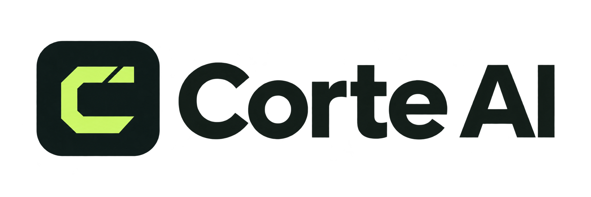

Identidade Corte AI
Uma marca feita
para o próximo corte.
Um “C” que abre espaço para uma nova cena. Grafite para dar foco ao conteúdo. Verde-lima para marcar o momento de criar.

Cores da marca
Grafite
#14201DLima
#C7F86BPapel
#F7F8F2
#14201DLima
#C7F86BPapel
#F7F8F2
Arquivos para apresentação
O kit contém a logo horizontal em PNG transparente, ícones PNG em vários tamanhos, o ícone Windows em ICO e um guia de uso. Preserve a proporção, as cores e o espaço ao redor da marca.

Arquivos da identidade do projeto Corte AI. O uso para identificar o produto não implica afiliação com TikTok ou outras plataformas.